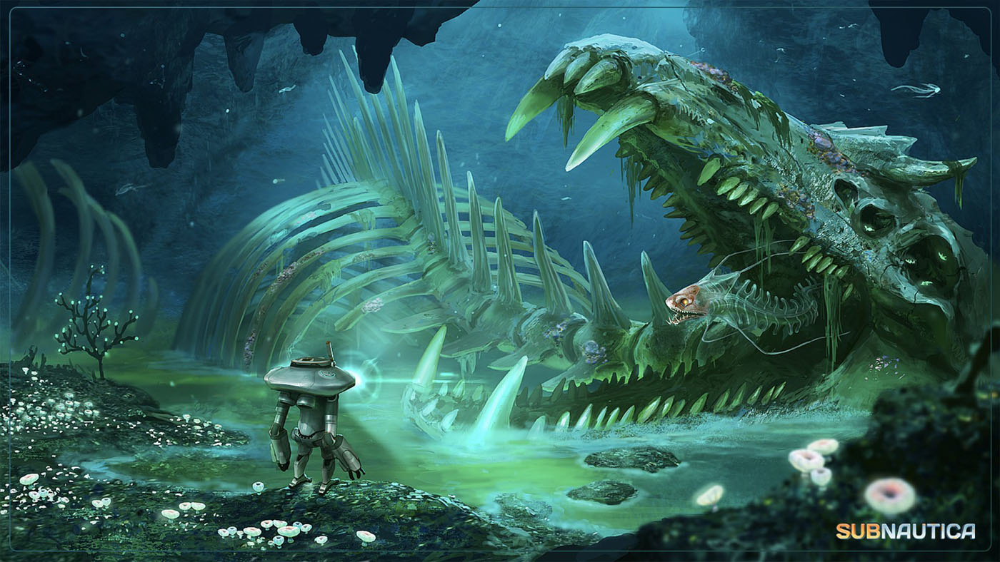

Bienvenidos a Subnautica HUB
La página que te informará y enseñará sobre SUBNAUTICA. Aquí aprenderás una gran variedad de cosas sobre este videojuego, desde sus orígenes hasta la actualidad.

- 


Subnautica es un juego de acción-aventura y supervivencia desarrollado y publicado por Unknown Worlds Entertainment. Permite al jugador explorar libremente un planeta oceánico alienígena, conocido como 4546B, recolectando recursos para sobrevivir, desarrollando una historia a lo largo del juego.
El juego se publicó en acceso anticipado en diciembre de 2014 para Windows, en junio de 2015 para MacOS, y para Xbox One en mayo de 2016. El 23 de enero de 2018 se lanzó al mercado la versión 1.0 de Subnautica para Windows y el 4 de diciembre de 2018, para Xbox y Playstation 4. Su secuela, Subnautica: Below Zero, se publicó en acceso anticipado el 14 de Mayo de 2018.
En la isla montañosa, donde busca la nave de rescate Sunbeam aterrizar, hay una base alienigena, la cual contiene un cañon gigante que diversas teorias afirman que este fue este el que derrumbó a Aurora.
La función principal de esta base es hacer cumplir una cuarentena estricta en todo el planeta 4546B. Los Precursores (la antigua raza alienígena que la construyó) la programaron para evitar que cualquier organismo infectado con la bacteria Kharaa, incluido el jugador, abandone el planeta y propague la enfermedad a otros mundos.
La característica más notoria de la plataforma es un enorme cañón de energía situado en su parte superior, que dispara automáticamente a cualquier nave que intente entrar o salir de la atmósfera del planeta. Este es el dispositivo responsable de derribar a la Aurora, a la nave de rescate Sunbeam y a otras naves que se estrellaron en el planeta.